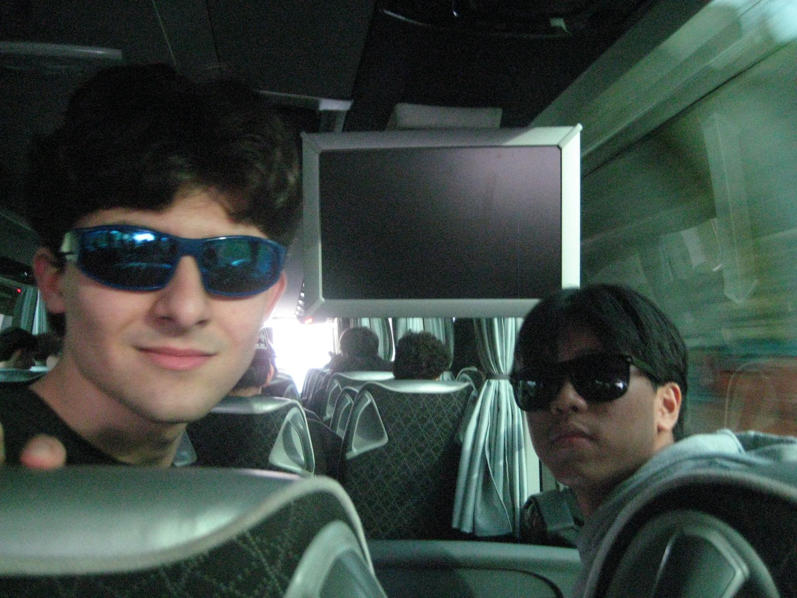
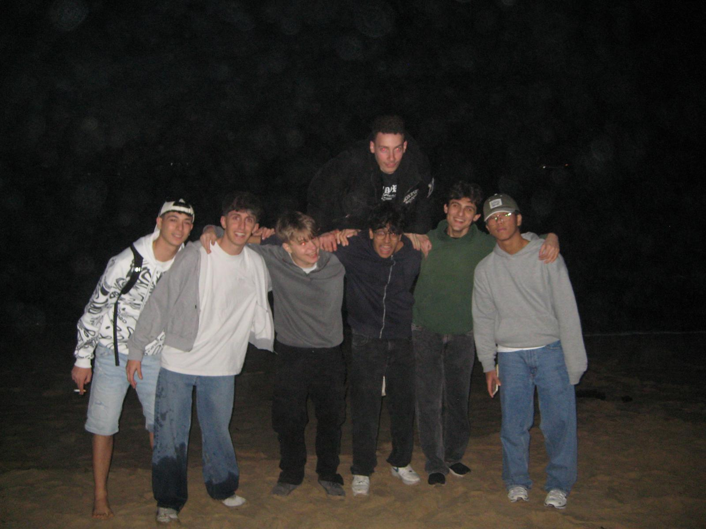

Info sul viaggio
Siamo partiti nel primo pomeriggio: prima l'aereo e poi un tratto in pullman per arrivare finalmente a destinazione. Una volta sistemati i bagagli nelle stanze, siamo corsi subito in spiaggia. I giorni successivi sono stati intensi: sveglia presto per cavalcare le onde con i maestri di surf, poi doccia e pranzo veloce. Il pomeriggio era tutto per noi, mentre la sera cenavamo in compagnia dei prof. Il bello però arrivava dopo cena: non appena i professori si ritiravano, la festa continuava fino al mattino dopo! Il ritorno è stato un po' traumatico: sveglia all'alba per il pullman e volo verso casa, con rientro in Italia giusto per pranzo.
Punti Salienti
La partenza
Alle 13:00 ci siamo ritrovati a Malpensa con le classi 4ª ATLC, BMEC e AMEC. Dopo i controlli di sicurezza e un pranzo veloce di gruppo al McDonald's, siamo decollati nel primo pomeriggio alla volta di Santander, una volta arrivati in spagna abbiamo preso un autobus che ci ha portato alla casa.
L'arrivo
Appena arrivati abbiamo scelto le camere e i letti (il primo ad arrivare prendeva il migliore) e lasciato le valigie. Dopo aver girato la casa per esplorarla e aver aspettato che tutti si fossero sistemati, siamo andati a vedere la spiaggia nonostante fosse tarda serata; infine, siamo tornati indietro per mangiare.
la prima onda
La prima mattina sono iniziate le lezioni di surf e siamo stati divisi in due gruppi: la 4ª ATLC e le classi 4ª A/B MEC. Mentre il primo gruppo prendeva mute e tavole per entrare in acqua, l'altro restava a casa, per poi darsi il cambio alla fine della sessione. Le lezioni duravano circa due ore; una volta rientrati, ci lavavamo e pranzavamo.
La sera
Le serate trascorse nell'ostello erano il momento in cui il gruppo si divideva in base alla voglia di fare. Dopo le attività della giornata, si creava sempre un po' di sano caos: alcuni si ritrovavano insieme a guardare la TV, altri si divertivano a organizzare scherzi rendendo l'atmosfera vivace, mentre altri ancora preferivano ritirarsi nelle proprie camere per godersi un po' di meritato relax
la prima grigliata
Nonostante l'iniziale riluttanza dei prof, siamo riusciti a organizzare una grigliata di gruppo. Ci siamo divisi i compiti con efficienza: Canali e Palla alla griglia, Zambrano al taglio della carne e il resto del gruppo impegnato tra cucina e tavola. Dopo una serata di divertimento, chi non aveva cucinato si è occupato di sparecchiare e pulire tutto
il ritorno
Il rientro è iniziato con il volo da Santander, atterrato puntualmente a Malpensa alle 13:00. Concluse le procedure al Terminal 2, la trasferta è terminata ufficialmente. Nonostante la soddisfazione, siamo arrivati tutti molto stanchi e provati dai ritmi intensi, desiderosi solo di tornare a casa a riposare.
Galleria Fotografica
Alcuni momenti della gita




Video
Piccoli video che mostra la nostra felicita e voglia di fare durante la gita
Recap Clip Gita
Ritorno dalla spiaggia all'ostello in van.
Preparazione grigliata organizzata da noi studenti.
Noi che surfiamo.
Diario Giornarielo
Giorno 1
siamo arrivati a valencia e abbiamo preso un pulman per andare a somo dove ci siamo sistemati nel ostello, sistemandoci nelle proprie camere , dopo siamo andati sulla spiaggia alla playa de somo.
Giorno 2
abbiamo fatto la nostra prima lezione di surf e di pomeriggio essendo che pioveva , siamo rimasti nel ostello.
Giorno 3
abbiamo fatto la seconda lezione di surf e di pomeriggio abbiamo preso il traghetto per andare visitare santader e abbiamo incontrato un gruppo scolastico francese provenienti da lille infine alla sera abbiamo fatto la grigliata tra noi studenti.
Giorno 4
abbiamo fatto la nostra ultima lezione di surf , il pomeriggio pioviginava , alcuni studenti sono rimasti nel ostello mentre altri hanno deciso di andare di nuovo a santander , infine per concludere la serata abbiamo fatto una grigliata insieme a tutti, compresi prof ,studenti di tutte le classi e i proprietari / aiutanti del ostello.
Giorno 5
ci siamo svegliati di mattina presto , abbiamo preso il bus e ci siamo diretti in aereporto , arrivati in aereoporto abbiamo fatto tutti i controlli e abbiamo stivato i bagagli , successivamente siamo saliti a bordo del nostro aereo per il ritorno , cosi si è concluso il viaggio.
Voci degli studenti
"La mia parte preferite è stata la grigliata organizzata da noi anche se i professori non erano d'accordo di farla, la migliore serata della mia vita" -Diani
"La mia parte preferita sono stale le lezioni si surf, soprattutto quando riuscivo a stare in piedi sulla tavola" -Horawala
"Le parti migliori della gita sono state le sere trascorse, indimenticabili" -Zambrano
"La mia parte preferia è stata la grigliata con i prof, adoro stare in compagnia e mi sono divertito a scherzare con i prof e i compagni" -Pozzi
Suggerimenti Per Futuri Studenti
- Per anadre a Santander meglio prendere il traghetto che andare con la macchina.
- Per comprare qualcosa andate nei supermercati Lupa che sono vicini, costano poco e sono ben rifirniti.
- Mettersi un costume attillato per stare comodi nella muta
- Per mangiari ci churros migliori di Santander vai a chocolateria aliva.
- Portarsi un ombrello/impermeabile perchè piove frequentemente.